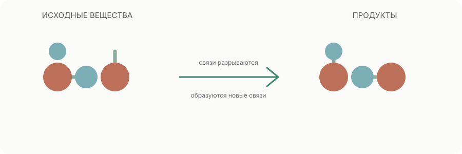

В химической реакции атомы перегруппировываются: одни связи разрываются, другие образуются. Число атомов каждого элемента сохраняется.
Закон сохранения атомов
Уравнение реакции должно быть сбалансировано: число атомов каждого элемента слева и справа одинаково.
2H₂ + O₂ → 2H₂O

01
Соединение
Из нескольких веществ образуется одно более сложное вещество.
02
Разложение
Одно соединение превращается в два или более продукта.
03
Обмен
Два соединения обмениваются ионами или группами.
Это несколько распространённых схем классификации, а не полный перечень. Одна реакция может одновременно относиться к разным типам; окислительно-восстановительные реакции выделяют по изменению степеней окисления.
В ионных уравнениях сохраняется не только число атомов каждого элемента, но и суммарный электрический заряд.
При уравнивании меняют только коэффициенты перед формулами. Индексы внутри формул менять нельзя: это означало бы заменить сами вещества.
Уравнение показывает, какие вещества превращаются друг в друга, но само по себе не сообщает, насколько быстро идёт процесс и завершится ли он практически полностью.
01
Скорость реакции
Средняя скорость реакции показывает, как быстро меняются концентрации за выбранный промежуток времени. Для реакции aA → pP учитывают стехиометрические коэффициенты: скорость исчезновения A и образования P после такого деления имеет одинаковое положительное значение.
v = −(1/a)·Δ[A]/Δt = (1/p)·Δ[P]/Δt
02
Что влияет на скорость
Повышение температуры и концентрации часто увеличивает частоту эффективных столкновений; измельчение твёрдого реагента увеличивает площадь контакта. Катализатор предлагает другой путь реакции с меньшей энергией активации.
03
Динамическое равновесие
В закрытой системе обратимой реакции равновесие устанавливается, когда скорости прямой и обратной реакций равны. Концентрации при этом постоянны, но не обязательно одинаковы.
Для aA + bB ⇌ cC + dD реакционный коэффициент Q рассчитывают по текущим активностям: Q = a(C)^c·a(D)^d / [a(A)^a·a(B)^b]; константа K имеет ту же форму, но для равновесного состава. Активности — безразмерные величины; для разбавленных растворов их приближают отношениями концентраций к стандартной концентрации, а для идеальных газов — отношениями парциальных давлений к стандартному давлению. Чистые твёрдые вещества и жидкости в выражение не включают. Если Q < K, система смещается к продуктам; если Q > K — к реагентам; при Q = K достигнуто равновесие.
Для безразмерной термодинамической константы равновесия K при заданной температуре стандартное изменение энергии Гиббса связано с ней соотношением ΔᵣG° = −RT ln K. Поэтому K > 1 соответствует ΔᵣG° < 0, а K < 1 — ΔᵣG° > 0; это сравнение относится к стандартным состояниям, а не само по себе к направлению реакции в произвольной смеси.
Если изменить концентрацию, давление (для газовых систем) или температуру, равновесный состав изменится. Система реагирует так, чтобы частично ослабить внешнее воздействие; это качественный принцип Ле Шателье, а не правило о том, что изменение всегда полностью компенсируется.
Катализатор ускоряет достижение равновесия, но при данной температуре не изменяет положение равновесия и значение константы равновесия.
Тепловой эффект реакции и энтальпия
При химическом превращении энергия может передаваться окружающей среде или поглощаться из неё. При постоянном давлении, если совершается только работа расширения, тепло реакции равно изменению энтальпии.
qₚ = ΔH
ΔH < 0
Экзотермическая реакция
Энтальпия системы уменьшается; тепло передаётся окружающей среде. Например, горение метана.
ΔH > 0
Эндотермическая реакция
Энтальпия системы увеличивается; процесс поглощает тепло из окружающей среды.
Пример: горение метана
CH₄(g) + 2O₂(g) → CO₂(g) + 2H₂O(l)
При 298,15 K и стандартном давлении (1 бар), если образуется жидкая вода, ΔᵣH° ≈ −890,3 кДж на 1 моль CH₄. При образовании водяного пара значение будет другим.
Закон Гесса: суммарное изменение энтальпии зависит только от начального и конечного состояний, а не от пути реакции. При обращении уравнения знак ΔH меняется; при умножении всех коэффициентов на число ΔH умножается на то же число.
Энтальпия — функция состояния. Знак ΔH описывает тепловой эффект при заданных условиях, но сам по себе не определяет скорость реакции и не доказывает, что реакция самопроизвольна.
Потренируйтесь уравнивать реакцию
Подберите коэффициенты для реакции образования воды.